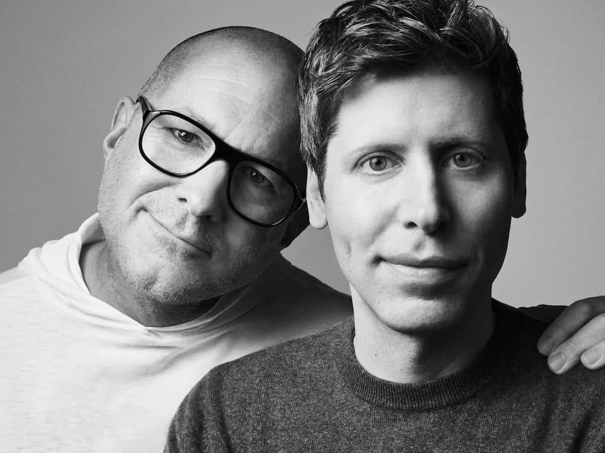

Sam & Jony introduce io
May 21, 2025
This is an extraordinary moment.
Computers are now seeing, thinking and understanding.
Despite this unprecedented capability, our experience remains shaped by traditional products and interfaces.
Two years ago, Jony Ive and the creative collective LoveFrom, quietly began collaborating with Sam Altman and the team at OpenAI.
A collaboration built upon friendship, curiosity and shared values quickly grew in ambition. Tentative ideas and explorations evolved into tangible designs.
The ideas seemed important and useful. They were optimistic and hopeful. They were inspiring. They made everyone smile. They reminded us of a time when we celebrated human achievement, grateful for new tools that helped us learn, explore and create.
It became clear that our ambitions to develop, engineer and manufacture a new family of products demanded an entirely new company. And so, one year ago, Jony founded io with Scott Cannon, Evans Hankey and Tang Tan.
We gathered together the best hardware and software engineers, the best technologists, physicists, scientists, researchers and experts in product development and manufacturing. Many of us have worked closely for decades.
The io team, focused on developing products that inspire, empower and enable, will now merge with OpenAI to work more intimately with the research, engineering and product teams in San Francisco.
As io merges with OpenAI, Jony and LoveFrom will assume deep design and creative responsibilities across OpenAI and io.
We could not possibly be more excited.
Sam & Jony
“AI is an incredible technology, but great tools require work at the intersection of technology, design, and understanding people and the world. No one can do this like Jony and his team; the amount of care they put into every aspect of the process is extraordinary.”
Sam Altman
“What it means to use technology can change in a profound way. I hope we can bring some of the delight, wonder and creative spirit that I first felt using an Apple Computer 30 years ago.”
Sam Altman
“I have a growing sense that everything I have learned over the last 30 years has led me to this moment. While I am both anxious and excited about the responsibility of the substantial work ahead, I am so grateful for the opportunity to be part of such an important collaboration. The values and vision of Sam and the teams at OpenAI and io are a rare inspiration.”
Jony Ive
“I am reminded of a time, three decades ago, when I emigrated to America. As a designer, I was drawn to the exhilarating and innocent optimism of Silicon Valley, to collaborate with people driven to create amazing products that elevate humanity.”
Jony Ive